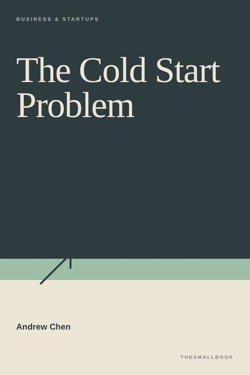

Library › Authors › Andrew Chen
Books by Andrew Chen
Andrew Chen has one book in the library. Every book here is read down to the big idea, the lessons, the lines worth keeping and the actions worth taking. Start with the summary, then buy the full book if it earns a place on your shelf.

The Cold Start Problem: How to Start and Scale Network Effects
2021 · 11 min · 8 lessons
Andrew Chen's manual for network-effect products: solving the cold start with atomic networks, riding the hype cycle, and surviving the saturation that killed Clubhouse.
Chen (a16z, ex-Uber growth) writes the lifecycle of network products in three acts: the Cold Start Problem (a network product with zero users is worthless; solve it with 'atomic networks', the smallest unit of users that delivers value, Tinder at a party, Uber in a San Francisco neighborhood), Tipping Point (hype cycles, rocket ships, and the mechanics of virality), and Overload (context collapse, crowding, the attrition curve: network products die from their own success more than competitors). The book's case...
Lessons in the summary
- Solve the Atomic Network First
- Come for the Tool, Stay for the Network
- Invite Mechanics Decide Your First Impression
- The Hype Cycle Is a Loan, Not Income
- Networks Decay from Over-Saturation, Not Competition
- Virality Is an Engine You Design, Not Luck You Hope For
- Hard Side vs Soft Side of Networks
- Plan the Second Network Before the First Saturates
Lines worth keeping
- A network product with zero users is a vacuum: it is worse than nothing.
- Build the smallest network that works, then build the next one.
- Networks don't die from competition. They die from their own party getting too crowded.
Questions Andrew Chen helps answer
Read nearby authors next
- Devdutt Pattanaik 5 books
- Rashmi Bansal 5 books
- Robin Sharma 5 books
- Chetan Bhagat 4 books
- Seth Godin 4 books
- Alex Hormozi 3 books
- Gurcharan Das 3 books
- Nir Eyal 3 books
Questions Andrew Chen helps answer
Where should I start with Andrew Chen? Start with The Cold Start Problem: How to Start and Scale Network Effects: Andrew Chen's manual for network-effect products: solving the cold start with atomic networks, riding the hype cycle, and surviving the saturation that killed Clubhouse.